- First things first, I will be using Visual Studio Code to edit my files, you can download it here. After you install it, make sure you can run it from terminal, here is how to accomplish that (if you are using Zsh use this post instead). 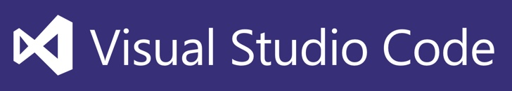
-
To start with the action, log in to your Azure account.
- Go to this link. This is the Azure Marketplace, where you can find multiple types of VMs ready to be deployed. 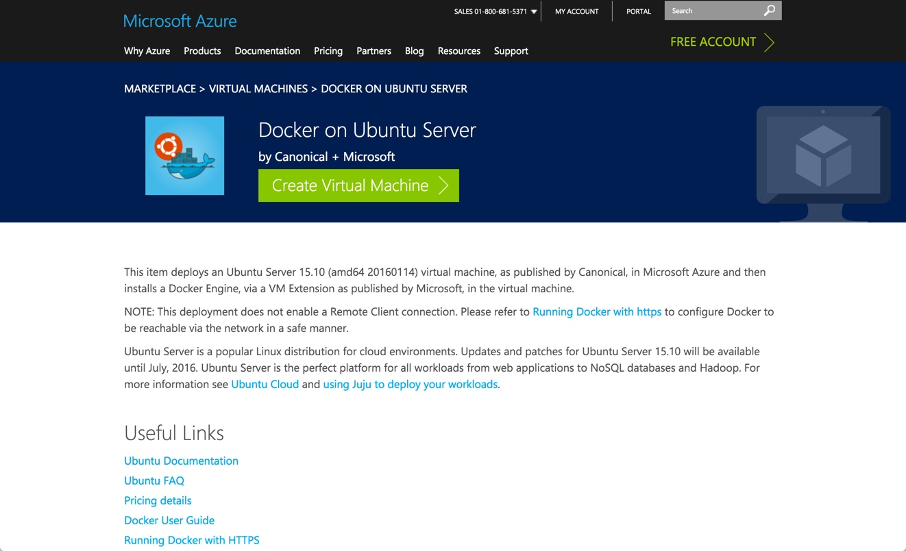
-
Click on the ‘Create Virtual Machine >’ button and this will redirect you to your Azure Account. For this case we have an Ubuntu Server provisioned with Docker. 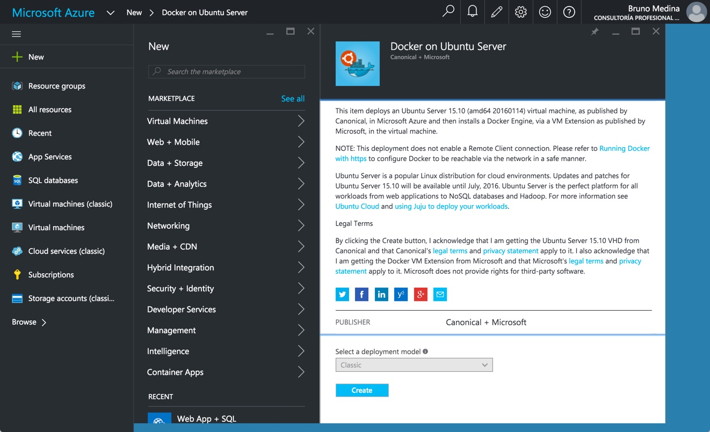
-
Press the ‘Create’ button and fill up the form. Remember “Host Name” is how you are gonna refer to your VM. “User name” is the name you will use to access to your VM. Also, I would suggest that you always use “SSH public key” as your authentication type.
- (Optional) Create an SSH key. The only thing you need to do is create the RSA key with the following command in your terminal (don’t forget to put your mail address instead of the placeholder).
ssh-keygen -t rsa -b 4096 -C "mymail@brus.ml"
2.- After this command you will be asked for a location to save your powerful key.
Enter a file in which to save the key (/Users/you/.ssh/id_rsa): [Press enter]
- Don’t forget the passphrase you use in the next step:
Enter passphrase (empty for no passphrase): [Type a passphrase]
Enter same passphrase again: [Type passphrase again]
- Now, after your key has been created just cat the content of your public key (if you used a different location, make sure you use the correct file).
code ~/.ssh/id_rsa.pub
[This is an example of how and your pub key should look like:]
ssh-rsa 123456789/dTc6wJT+YCOUiLLS6F7Ge4WlCgmH7fW7UIUJpFcXwDv1bWVMQ3chBFFELWEhEjCqX7HAVoSjEF8oAwM0Ik5p6y66J420eeOGBLHkyV+nBiV0F5WVRKFS5Az1rZy8x/1usbMms/skMnS5Int9QcGIIA9g7Ws9xg28/2XA5IUPUZ0kIKbuSv7bAIqrHaH7WXzUeLeOjUIeW34d9WO52kNqiITjyW1D7kThXKtgS9Y5TEie5MuP8plzz+mBID59EFmdEhBK7QquuT6axI1PIDNm4PrhI7mJP9IgRRQOOXZ1rvoysOHxhDvzVWRuc623pV8PPjiBHiu1Y1T mymail@brus.ml
Copy all the content from the file and paste it to you VM’s definition in the Azure Portal. 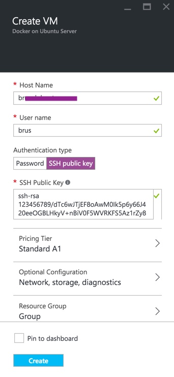
*Note: If you are using a Windows computer I higly suggest using “git shell” to create the key, you can download it here. Also you can use PuTTY.
- Select the “pricing tier” that suits your needs. Please remeber that you can select more pricing tiers from the “View All” option. 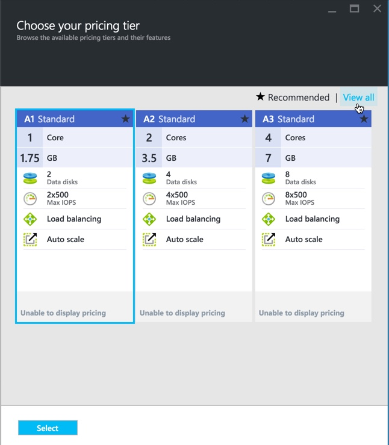
- Confirm the “Network” settings on your VM. You don’t really need to change anything here unless you want to customize something like your “Domain Name”. 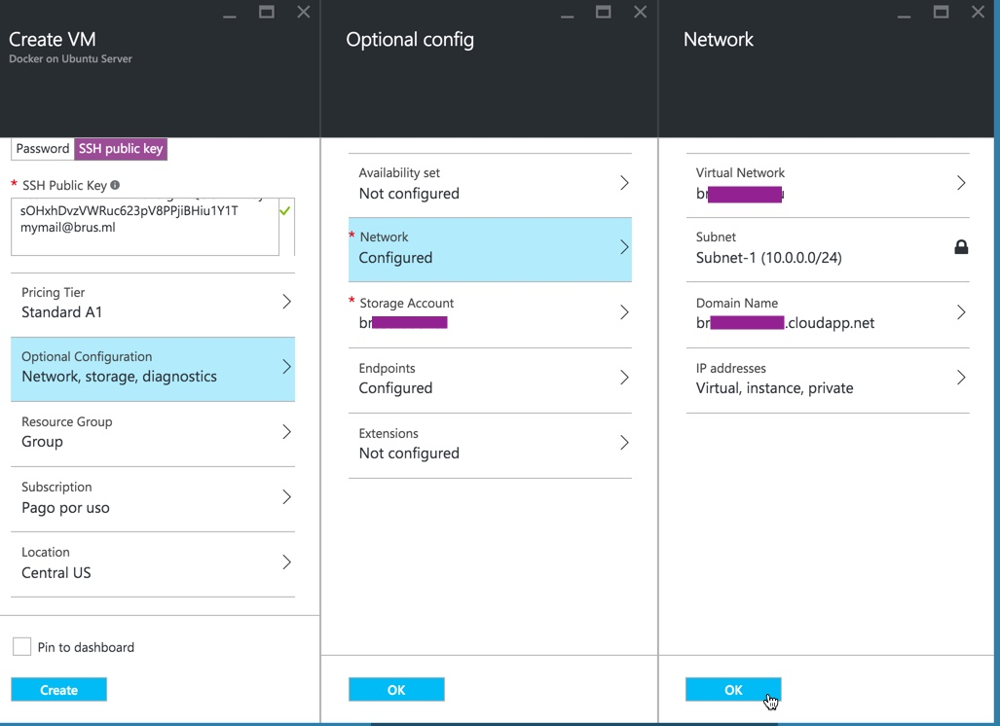
- Select or create a new Storage Account. If you already have an Storage Account that can be used for your VM, you just need to select it from here. 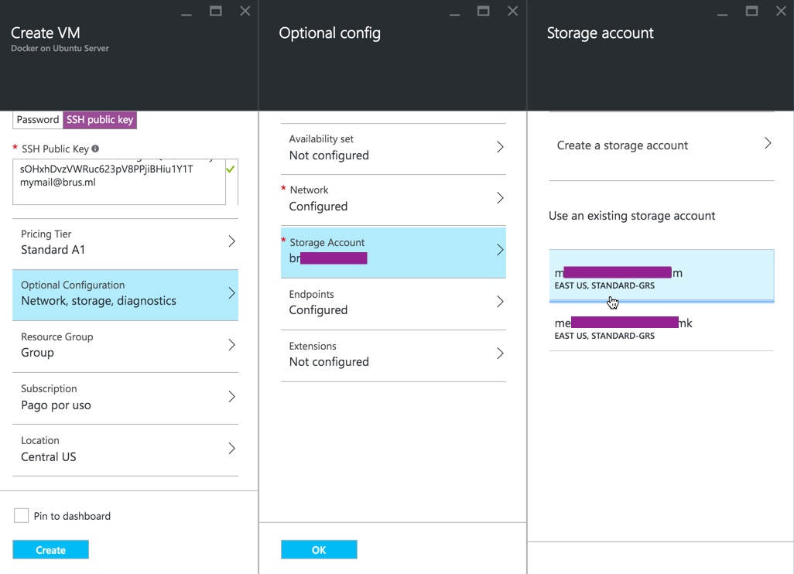
- Add rules to your VM. In order for us to see the web pages served by our VM we will have to allow HTTP and HTTPS traffic, that means that we need to create an allow rule for port 80 and another one for 443. 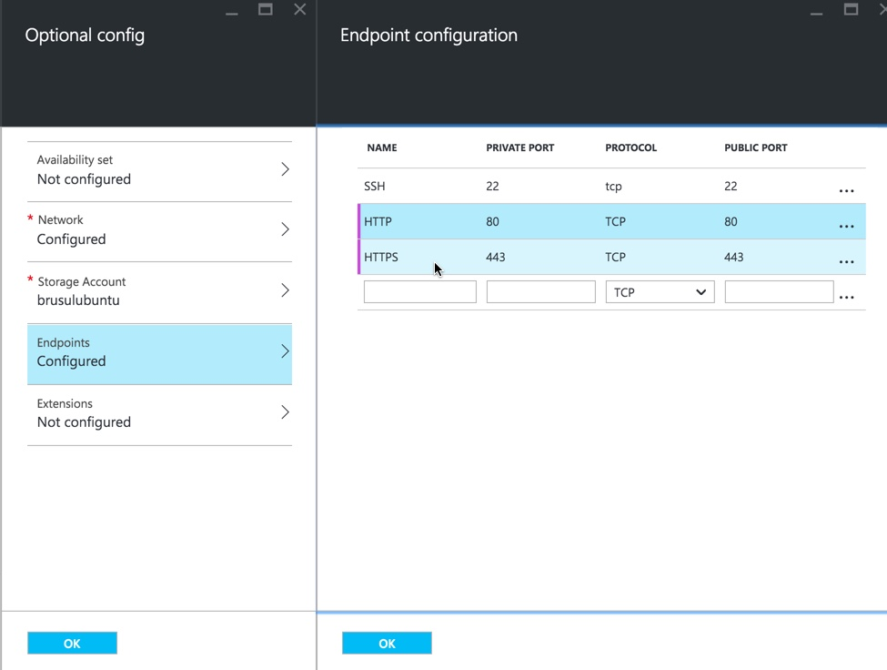
- Finally, we select the location of our VM and “Create” our VM. For this purpose, any datacenter would do. Now, my advice would be to use a region that is close to your business, also if you need it here is a list of services available by region. After you click on create you can see the progress of the deployment on you notifications. 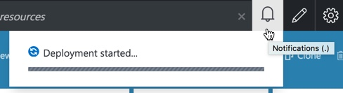 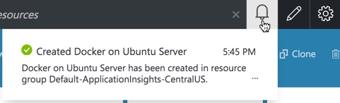
- Let’s take it for a ride! So finally we have our brand new toy deployed, lets verify if it’s up and running.
- Go to your new VM’s details. As you can see in the image the app is up and running, it has a DNS name and an IP. 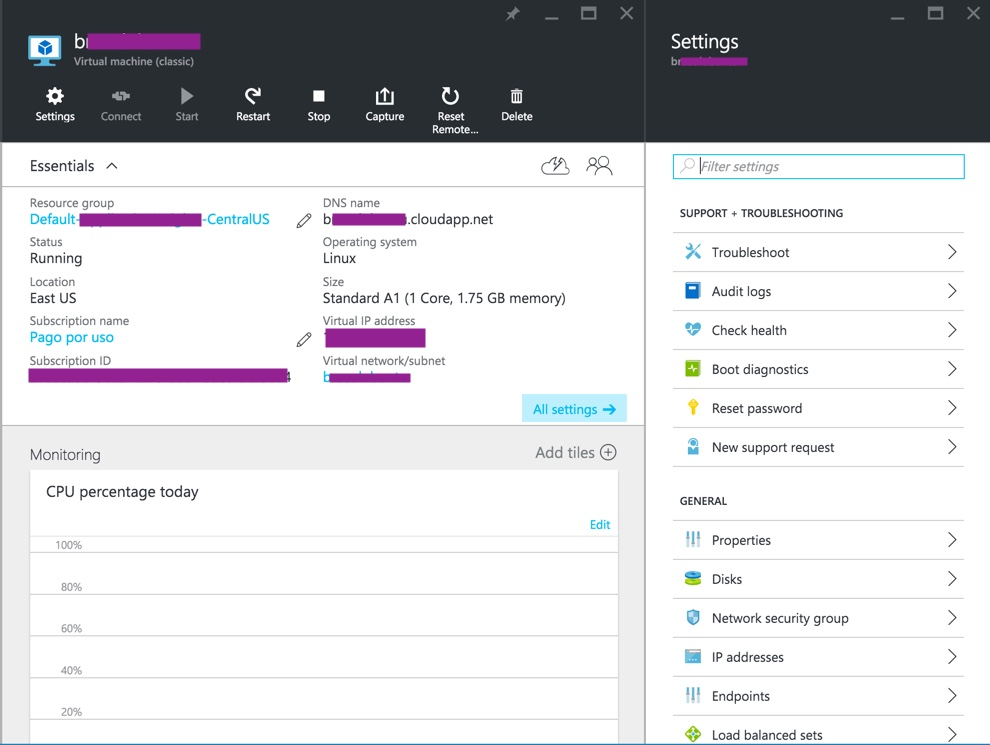
- SSH into your VM. As you remembered we have already set up the SSH access to our VM, so lets open a terminal and try to log in:
ssh myUserName@myDomainName.cloudapp.net
Make sure you replace “myUserName” with your VM’s user name and the url should be your “DNS name” from the VM’s details. Now you will have to confirm de connection:
The authenticity of host 'myDomainName.cloudapp.net (14.81.161.17)' can't be established.
ECDSA key fingerprint is SHA256:Fy9G/qkO9mlNo6aJpcBT3SL4Qz1BMWB9iTAJ6VrvjbPS.
Are you sure you want to continue connecting (yes/no)? yes [Type 'yes' and enter]
Warning: Permanently added 'myDomainName.cloudapp.net,14.81.161.17' (ECDSA) to the list of known hosts.
-
Since we are using our public key we should be getting something like this:
Welcome to Ubuntu 15.10 (GNU/Linux 4.2.0-23-generic x86_64) Documentation: https://help.ubuntu.com/ Get cloud support with Ubuntu Advantage Cloud Guest: http://www.ubuntu.com/business/services/cloud 83 packages can be updated. 61 updates are security updates. The programs included with the Ubuntu system are free software; the exact distribution terms for each program are described in the individual files in /usr/share/doc/*/copyright. Ubuntu comes with ABSOLUTELY NO WARRANTY, to the extent permitted by applicable law. To run a command as administrator (user "root"), use "sudo <command>". See "man sudo_root" for details. _____________________________________________________________________ WARNING! Your environment specifies an invalid locale. This can affect your user experience significantly, including the ability to manage packages. You may install the locales by running: sudo apt-get install language-pack-UTF-8 or sudo locale-gen UTF-8 To see all available language packs, run: apt-cache search "^language-pack-[a-z][a-z]$" To disable this message for all users, run: sudo touch /var/lib/cloud/instance/locale-check.skip _____________________________________________________________________ myUserName@myDomainName:~$
SO, WE ARE IN!
Note: If you configured your VM to use a password instead of an SSH key you will be asked to submit it.
Note 2: Also, in the case that you set up your SSH key with ssh-keygen but the server is asking you for a password, that means that the SSH command is not finding your key.
In this case make sure of two things, that your key is valid and is set to your terminal with ssh-add read this.
And also, make sure that you are using the correct SSH key, you can use ssh -v -i path/to/key to make sure it’s using the correct identity and “-v” will make the command verbose so you can see the error logs.
In the worst case scenario, remember you can reset your password and user name in the portal:
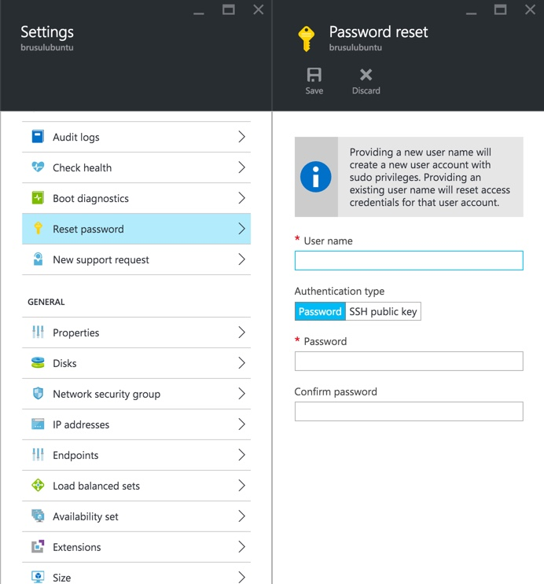
- (OPTIONAL) Also, if you want to add a higher degree of customization you can create a
configfile on.sshfolder.
echo "" > ~/.ssh/config
code ~/.ssh/config
6. You can take the following lines as an example, just make sure to replace the relevant information and save it after you are done:
Host myVM
HostName myDomainName.cloudapp.net
User myUserName
IdentityFile ~/.ssh/id_rsa
*NOTE: Make sure that the identity file is the private key (not the .pub file) that you created in the “Create an SSH key” step, it should be right next to the .pub file but without an extension or with the .key extension.
With this change done you can easily get to your server using this command:
ssh myVM
And you should see your server, something like this:
Welcome to Ubuntu 15.10 (GNU/Linux 4.2.0-23-generic x86_64)
* Documentation: https://help.ubuntu.com/
Get cloud support with Ubuntu Advantage Cloud Guest:
http://www.ubuntu.com/business/services/cloud
84 packages can be updated.
61 updates are security updates.
Last login: Mon Apr 4 01:04:56 2016 from 189.147.6.184
brus@brusulubuntu:~$
1. **Let's try docker.** Let's remember this VM has docker pre-installed. So run the following command:
```Shell
docker run hello-world
```
So after a few seconds we should have an output like this:
Unable to find image 'hello-world:latest' locally
latest: Pulling from library/hello-world
03f4658f8b78: Pull complete
a3ed95caeb02: Pull complete
Digest: sha256:8be990ef2aeb16dbcb9271ddfe2610fa6658d13f6dfb8bc72074cc1ca36966a7
Status: Downloaded newer image for hello-world:latest
Hello from Docker.
This message shows that your installation appears to be working correctly.
To generate this message, Docker took the following steps:
1. The Docker client contacted the Docker daemon.
2. The Docker daemon pulled the "hello-world" image from the Docker Hub.
3. The Docker daemon created a new container from that image which runs the
executable that produces the output you are currently reading.
4. The Docker daemon streamed that output to the Docker client, which sent it
to your terminal.
To try something more ambitious, you can run an Ubuntu container with:
$ docker run -it ubuntu bash
Share images, automate workflows, and more with a free Docker Hub account:
https://hub.docker.com
For more examples and ideas, visit:
https://docs.docker.com/userguide/
The cool thing behind docker is that if we run this command again, we won’t have to download the image again. It will re-use the image that we just downloaded :)